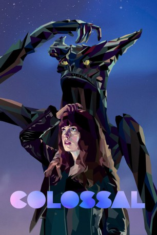

#7615 Colossal
 
 IMDB-Wertung: 6.2 / 10
IMDB-Wertung: 6.2 / 10  Metascore: 0
Metascore: 0 
Gloria verliert in Colossal ihren Job und ihren Verlobten Tim und entschließt sich, ihr Leben in New York hinter sich zu lassen, um in ihre Heimatstadt zurückzuziehen. Dann tauchen allerdings Berichte auf, dass eine kolossale Eidechse das japanische Tokio zerstört und Gloria realisiert, dass sie auf wundersame Weise in Verbindung mit diesen weit entfernt stattfindenden Ereignissen steht. Verbunden durch die Kraft ihrer Gedanken, bemüht sie sich, eine weitere Zerstörung abzuwenden. Gleichzeitig versucht sie herauszufinden, warum ihre auf den ersten Blick so nichtige Existenz einen so weitreichenden Einfluss auf das Schicksal der Welt hat.
Jahr: 2016
Dauer: 109 Minuten
FSK: 12
Land: Kanada Studio: Albatros FilmTonspuren: DTS - ,
Untertitel: Deutsch, Englisch,
Auflösung: 1080p (1920x808) Größe: 5099 MB
Genre: Action, Drama, Sci-Fi, Komödie, Fantasy
Regisseur: Nacho Vigalondo
Drehbuch: Nacho Vigalondo
Soundtrack:
Darsteller:
 Anne Hathaway als Gloria
Anne Hathaway als Gloria Jason Sudeikis als Oscar
Jason Sudeikis als Oscar Austin Stowell als Joel
Austin Stowell als Joel Tim Blake Nelson als Garth
Tim Blake Nelson als Garth Dan Stevens als Tim
Dan Stevens als Tim- Hannah Cheramy als Young Gloria
- Sarah Surh als Mother
- Melissa M. Montgomery als Waitress
- Christine Lee als Seoul Waitress
 Rukiya Bernard als Maggie
Rukiya Bernard als Maggie- James Yi als Fund Raiser Man
- Miho Suzuki als International News Anchor
- Charles Singh als Expert #1
 Agam Darshi als Ash
Agam Darshi als Ash- Andrew Tait als Bar Patron , uncredited
- Nathan Ellison als Young Oscar
- Haeun Hannah Cho als Little Girl
- Carlos Joe Costa als Old Man
- Alyssa Dawson als Reporter
- Jenny Mitchell als Expert #2
- Maddie Smith als Reporter #2
- Everett Adams als Chubby Boy
- Hettie Lynne Hurtes als News Reporting Consultant
- Alex Cohen als News Reporting Consultant
- Steve Julian als News Reporting Consultant
- Eoin Bates als Bar Guy , uncredited
Datei: X:\2016(A-F)\Colossal (2016, FSK12, 1920x808).mkv seit 29.11.2017
Festplatte: HD 2016(A-Z)
 Es gibt insgesamt 147 Filme in der Gruppe '2016(A-F)'
Es gibt insgesamt 147 Filme in der Gruppe '2016(A-F)'